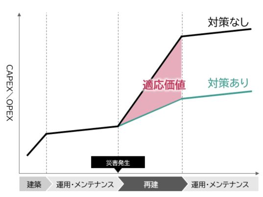

本展示の概要説明
- 民間企業が適応策へより多くの資金を投資するためには、誰もが適応策に対する投資対効果を判断できるようにする必要があります。 当コンソーシアムは、”適応価値“ (適応策の導入前後の経済効果・環境効果の差分)の見える化・定量化を実現するDXの開発および適応ファイナンスアプローチの構築に取り組んでいます。
- 本展示は、適応策実施前後における災害被害の軽減効果を3Dモデルで可視化したシミュレーションです。合わせて、災害被害減少に役立つ適応策の例と、適応策の実施を促進する金融スキームを紹介します。
“適応価値”の考え方(災害からの再建の場合)
